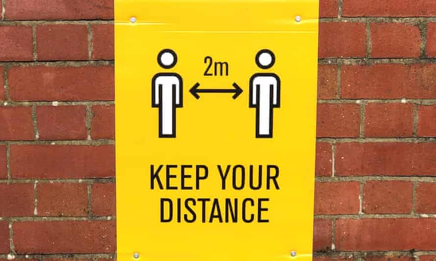

Home About Research Sources&Links
"As the COVID-19 virus spread from late 2019 into 2021, governments limited large gatherings and advised people to practise social
distancing. Restrictions caused by efforts to limit the spread of the virus changed practically every part of life and the way things
used to be".The Coronavirus crisis has reshaped the world! Some sectors and individuals have implemented creative ICT solutions
to adapt to new situations caused by the crisis".COVID-19 has affected our educational system.Covid-19 has stopped many operations,
which in this case we will be focusing on Educational sector. Coronavirus is a disease known as COVID-19 it is a disease caused by corona
-virus that can be easily spread from person to person. Early march our educational sectors had to shut down due to the rise of infections.
Most of the Schools have drastically struggled to operate due to less sanitation and as they do not have equipment such as ICT devices.School
will have to maintain a safe social distance and make sure learners are wearing a mask.

image by : SAnews
Most of the Schools have managed to implement some ICT devices while other school struggle due to financial implications. Journalist have investigated on the usage of technology, Mr smith reported that the growth of technology has increased.
Website by : MDPI
The Right to Education and ICT during COVID-19